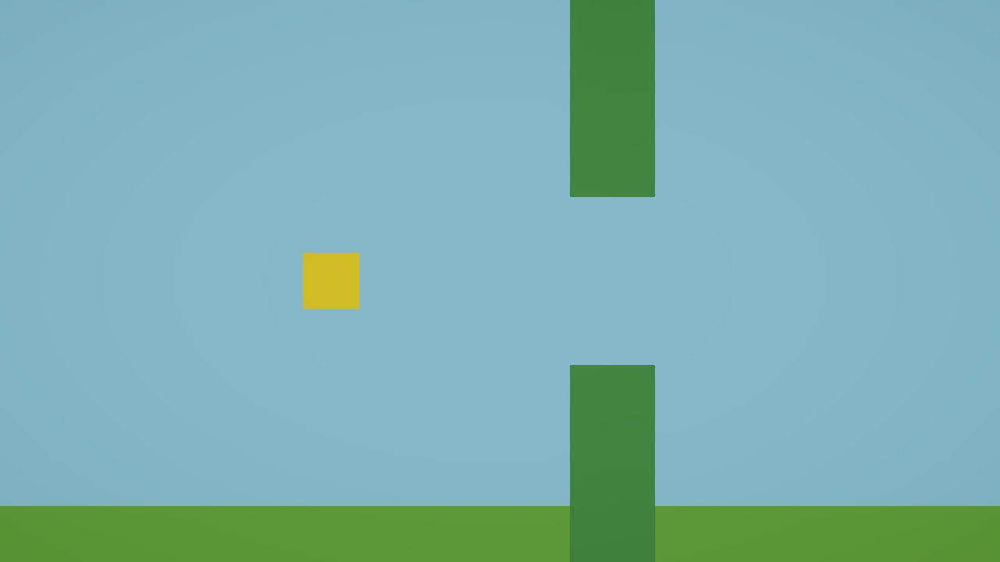

파이프를 설계도로 만들어
복제한다
11번에서 만든 파이프는 하나뿐이고, 지나가 버리면 끝이다. 게임이 되려면 계속 나와야 한다. 그렇다고 손으로 100개를 만들 수는 없다. 하나를 “설계도”로 만들어 두고, 코드로 찍어낸다.
- 1씬의 오브젝트를 프리팹으로 저장할 수 있다.
- 2프리팹(설계도)과 씬 인스턴스(실물)의 차이를 말할 수 있다.
- 3
Instantiate()로 코드에서 오브젝트를 만들 수 있다. - 4
public GameObject칸에 Inspector 로 참조를 연결할 수 있다.

PipePair(Clone) 이라는 이름으로 나타난다. Stop 하면 사라진다.손으로 100개를 만들 수는 없다
파이프를 계속 나오게 하려면 방법이 두 가지다.
Unity 에서 이 “설계도”를 프리팹(Prefab) 이라고 한다.
설계도와 실물
둘은 있는 곳부터 다르다.
(Clone) 이 붙는 이유
코드로 만든 오브젝트는 이름 뒤에 (Clone) 이 붙는다. PipePair 프리팹으로 만들면 PipePair(Clone) 이 된다. “이건 설계도가 아니라 찍어낸 것” 이라는 표시다.
(Clone) 은 Stop 하면 전부 사라진다. 이게 정상이다.
참조 — 칸에 끌어다 넣기
코드가 “어떤 프리팹을 찍어낼지” 알아야 한다. 그런데 코드에 파일 이름을 적어 넣는 방식은 쓰지 않는다. 이름을 바꾸는 순간 깨지기 때문이다.
대신 public GameObject 로 빈 칸을 만들어 두고, Inspector 에서 프리팹을 끌어다 넣는다. 이렇게 연결해 두는 것을 참조라고 한다.
public GameObject pipePrefab; // Inspector 에 "Pipe Prefab" 칸이 생긴다07번에서 public float 이 숫자 칸을 만들었던 것과 같다. public GameObject 는 오브젝트를 넣는 칸을 만든다.
Play 하면 여기에 결과가 나온다만들어 보자
1 · 프리팹으로 저장하기
Assets 에 Prefabs 폴더를 만든다 PipePair 를 Project 창의 Prefabs 폴더로 끌어다 놓는다PipePair 이름이 파란색으로 바뀐다 — 프리팹과 연결됐다는 표시다2 · 씬의 원본 지우기
Hierarchy 의 PipePair 를 삭제한다. 설계도는 Project 창에 남아 있으니 사라지지 않는다.
3 · 스포너 만들기
Hierarchy 빈 곳 오른쪽 클릭 → Create Empty → 이름을 PipeSpawner 로. 11번에서 PipePair 를 만들 때와 같은 방식이다. 눈에 보이는 것은 없고 일만 한다.
4 · 코드
using UnityEngine;
public class PipeSpawner : MonoBehaviour
{
public GameObject pipePrefab;
void ________()
{
___________(pipePrefab, new Vector3(11f, 0f, 0f), Quaternion.identity);
}
}Insta 로 시작한다Quaternion.identity 는 “회전 없음” 이라는 뜻이다. 지금은 그냥 이렇게 쓴다고 알아두면 된다.
5 · 참조 연결하기 — 잊기 쉬운 단계
PipeSpawner 스크립트를 PipeSpawner 오브젝트에 붙인다Pipe Prefab 칸이 생긴 것을 확인한다PipePair 프리팹을 그 칸으로 끌어다 놓는다정답 확인
using UnityEngine;
public class PipeSpawner : MonoBehaviour
{
public GameObject pipePrefab;
void Start()
{
Instantiate(pipePrefab, new Vector3(11f, 0f, 0f), Quaternion.identity);
}
}Instantiate(A, B, C)A 설계도로 B 위치에 C 회전으로 하나 만들어라Start()지금은 한 번만 만든다. 13번에서 여기를 Update() 로 옮겨 계속 나오게 한다확인한다
PipePair(Clone) 이 보인다마지막 항목은 이렇게 확인한다
PipePair 프리팹을 더블클릭 — 프리팹 편집 화면이 열린다PipeTop 의 Position y 를 4 → 5 로 < 화살표로 씬으로 돌아온 뒤 Play4 로 되돌린다PipeTop 의 y 를 4 → 5 로 고치자 새로 생긴 클론의 틈이 3.00칸 → 4.00칸 으로 바뀌었다. 씬에는 파이프가 하나도 없는데도 바뀐 값으로 나온다.문항 1 · Stop 하면 왜 사라지나
Play 중에 생긴 PipePair(Clone) 이 Stop 하면 사라지는 이유는?
문항 2 · 이미 나온 파이프는
파이프 3개가 화면에 흘러가는 중에 프리팹의 색을 빨강으로 바꿨다. 화면의 3개는?
반면 프리팹의 구조(위치·크기·컴포넌트)를 바꾸면 이후에 만들어지는 것부터 적용된다. 붕어빵 틀을 고쳐도 이미 구운 붕어빵은 안 바뀌는 것과 같다.
막혔을 때
NullReferenceException가장 흔하다. Pipe Prefab 칸이 비어 있다. Project 창의 프리팹을 끌어다 넣자. 10번의 Rigidbody 를 안 붙였을 때와 같은 에러다PipePair 를 안 지웠다. 원본이 남아 있고 클론이 또 생긴 것이다Pipe Prefab 칸이 없다public 을 안 붙였거나 변수가 메서드 안에 있다. 07번을 다시 보자13번 예고
Start() 에서 한 번만 만든다. 계속 나오게 하려면 Update() 로 옮겨야 하는데, 그냥 옮기면 매 프레임 하나씩 = 1초에 60개가 쏟아진다. 13번에서 “몇 초마다 한 번”을 만드는 법을 배운다. 07번의 Time.deltaTime 이 이번엔 곱하는 게 아니라 더하는 데 쓰인다.